تقارير التلج · الشتوات اللي فاتو
تقارير يومية ديال التلج للي كيتزلجو: فين كاين التلج، شنو جاي، وفين تمشي تتزلج، من الخريطة ديال التلج ديال SnowScope ومحطات القياس. كل رقم جاي من المعطيات ديال داك النهار.

قارنّا التلج اللي كاين نهار 10 نونبر مع أكبر علو ديال التلج فكل موسم، ف 46 محطة ديال التزلج وعلى 46 موسم. البداية بالتلج كتعاون، ولكن أقل من داكشي اللي كيتخيلو بزاف ديال المتزلجين.

شحال بقات جبال البيريني بيضا كل شتوة من 2000-01، كيف كيشوفها الساتليت، والعلو ديال التلج ف10 محطات عندهم سلاسل طويلة. تلاتة ديال الشتوات ضعاف ورا بعضياتهم سالاو ف2025-26؛ وهاد الخريف بدا عادي.

ف 24 شتاء من 46، المحطات اللي فالجهة الإيطالية وجنوب الألب الفرنسية جاتهم شتوية كبر نسبيا من الجهة الشمالية. المبيان، العوام الكبار، والطقس اللي كان موراهم.

التلج فدجنبر كيتعلق قبل كلشي بالعلو. 46 شتوة فاتت ف676 محطة فالألب كيبينو شحال ديال التلج تتسنى نهار 1 و15 و22 دجنبر، من تحت 1200 م حتى لفوق 2400 م.

Vail بالأرقام: القمة العادية تقريبا 64 in (162 cm) فالوسط ف 46 شتوة اللي فاتو، مارس أكثر شهر فيه التلج، مع البيستات، الطريق والسلامة.
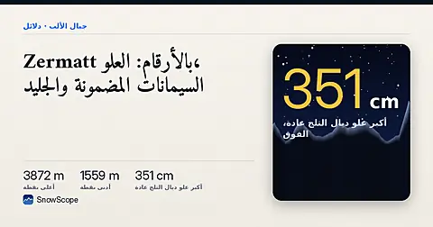
Zermatt بالأرقام: فين كيبقى التلج، أضمن الشهور وكيفاش توصل للقرية اللي بلا طوموبيلات، من 46 شتوة اللي فاتت.

Steamboat فـ Colorado للعائلات: شنو كيناسب الصغار بزاف، الدراري، المراهقين والواليدين، مع التلج ديال 46 شتوة اللي فاتو فتلاتة ديال العلوات.
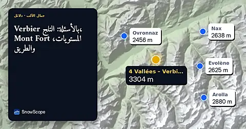
واش Verbier مزيانة للمبتدئين؟ إمتى التلج أحسن؟ كيفاش توصل؟ الأجوبة على 4 Vallées و 46 شتوة اللي فاتت.

كيفاش تدوز أول نهار ف Park City Mountain، Utah، وإمتى تمشي: التاريخ ديالنا كيعطي تقريبا 71 in (180 cm) فالقمة العادية فالوسط ف 46 شتوة اللي فاتو.

Sella Ronda من Sëlva ف Val Gardena: الكولات ديال Gardena و Campolongo و Pordoi و Sella بالترتيب، مع التاريخ ديال التلج ديالنا ف 46 شتوة اللي فاتت.

Mt Baker، Washington: تقريبا 133 in (337 cm) فالقمة العادية فالوسط ف 46 شتوة اللي فاتو، رقم قياسي عالمي ديال التلج، وماكاينش فين تبات فالجبل.

Val d'Isère و Espace Killy للمبتدئين، المتوسطين والمحترفين، مع التلج ديال 46 شتوة اللي فاتت فتلاتة ديال العلوات.

خطط ل Mammoth Mountain حسب الموسم: تقريبا 93 in (235 cm) فالقمة العادية فالوسط ف 46 شتوة اللي فاتو، مارس أكثر شهر، ربيع طويل وشتوات كتبدل.

Kitzbühel مشهورة وواطية. شنو كيقولو 46 شتوة اللي فاتو على التلج ف 762 م، 1,377 م و 1,993 م، شنو تبدل، وأشمن سيمانات أضمن.

الخرافات على Jackson Hole مقارنة مع الحقائق والتاريخ ديالنا: تقريبا 80 in (204 cm) فالقمة العادية فالوسط ف 46 شتوة اللي فاتو، بلا نقصة واضحة.
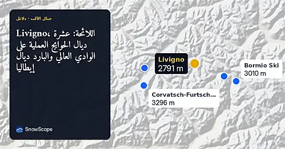
عشرة ديال النقط العملية لسفرية ديال التزلج ل Livigno: الطرقان، البرد، الحوانت بلا ضريبة، الجوج ديال الجهات والوقت الأحسن للتلج، من 46 شتوة اللي فاتت.

كيفاش كيدوز عادة نهار ديال التلج ف Whitewater حدا Nelson، من أول شوفة للتوقعات حتى لآخر هبطة، مع التلج ديال 46 شتوة اللي فاتو فتلاتة ديال العلوات.

Arc 1600 و 1800 و 1950 و 2000 مقارنين فالتلج، البيستات والطريق، مع 46 شتوة اللي فاتت من التاريخ ديال التلج ديالنا فتلاتة ديال العلوات ف Les Arcs.

Whistler Blackcomb لكل مستوى، مع التاريخ ديالنا: تقريبا 370 cm فالقمة العادية فالوسط ف 46 شتوة اللي فاتو، مارس وأبريل أكثر شهور فيهم التلج.

من الفلاحة ديال Walser حتى ل Weißer Ring: التواريخ اللي صنعات Lech Zürs، ومن بعد التاريخ ديال التلج ديالنا زمان ودابا، أول خمسطاش من 46 شتوة اللي فاتو مقابل آخر خمسطاش.
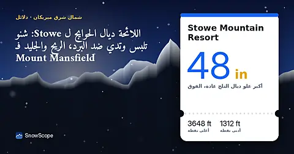
لائحة عملية ل Stowe فـ Vermont: الطبقات، حماية الوجه، الماسك، الكارات محدودين والسخانات، مربوطة بالتلج ديال 46 شتوة اللي فاتو فـ Mount Mansfield.
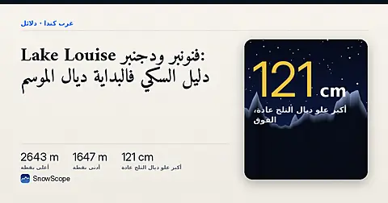
السكي ف Lake Louise فالبداية ديال الموسم: علاش كتبدا بكري، كيفاش كيكون التلج ديال نونبر ودجنبر عادة ف 46 شتوة اللي فاتو، وكيفاش تتزلج على تلج مازال رقيق.
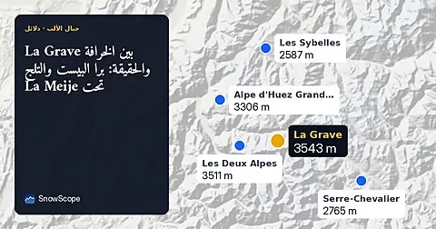
شنو الصحيح على La Grave، الجبل ديال برا البيست تحت La Meije: الأرض، السلامة، التلج فكل شهر والاتجاه، من 46 شتوة اللي فاتت.

Big Sky فـ Montana ساهلة تتخيلها: 5,850 acres تحت Lone Peak، وتلج تقريبا خمسة ديال المرات كثر قريب من القمة على التحت ف 46 شتوة اللي فاتو.
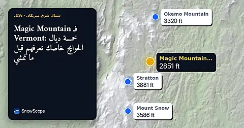
Magic Mountain ف Londonderry فـ Vermont: محطة صغيرة مستقلة فيها غابة واقفة، تيليسييج حمر قديم وتلج طبيعي رقيق. خمسة ديال الحوايج، مع التلج ديال 46 شتوة اللي فاتو.
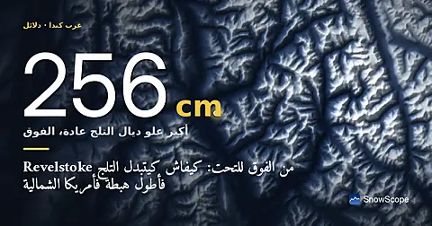
تزلج الفرق ديال العلو كامل ديال Revelstoke فراسك اللول: التلج فالقمة، فالوسط وفالتحت فالواد ف 46 شتوة اللي فاتو، وإمتى كل جزء كيكون فأحسن حالة.
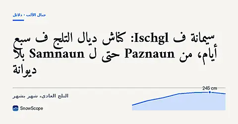
سبع أيام ف Silvretta Arena، نهار بنهار: فين كاين التلج، إمتى تدوز ل Samnaun، وشنو كيقولو 46 شتوة اللي فاتو على التلج ديال Ischgl ف تلاتة ديال العلوات.
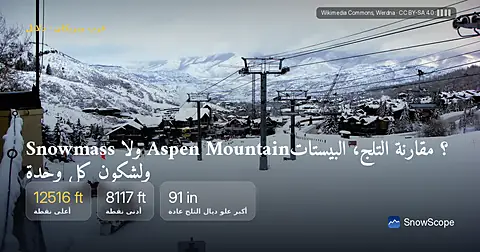
Aspen Snowmass مقارنة: Snowmass فيها تقريبا 75 in (190 cm) فالقمة العادية فالوسط ف 46 شتوة اللي فاتو، و Aspen Mountain تقريبا 69 in (174 cm).

Gourette و Cauterets جنب لجنب: العلو، التلج العادي فكل شهر، أحسن السيمانات والطريق، من 46 شتوة اللي فاتت.
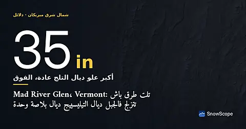
Mad River Glen، Vermont: تلج طبيعي، تقريبا 30 in (75 cm) فالقمة العادية فالوسط ف 46 شتوة اللي فاتو، فبراير أكثر شهر. تلت طرق باش تخطط للنهار.
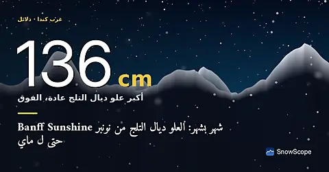
Banff Sunshine Village شهر بشهر: تقريبا 100 cm فالوسط فمارس عادي ف 46 شتوة اللي فاتو، أبريل أكثر شهر فالفوق، والموسم حتى ل آخر ماي.

تقريبا 109 in (276 cm) هي القمة العادية ديال Alta فالوسط ف 46 شتوة اللي فاتو. هنا: علاش السنوبورد كيبقى فالدار، أحسن الشهور وكيفاش تطلع الكانيون.
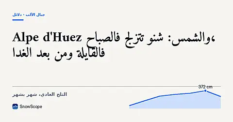
Alpe d'Huez مقابلة للشمس. كيفاش تنظم النهار بالساعة وبالعلو، مع التلج ديال 46 شتوة اللي فاتت من القرى اللي لتحت حتى ل Pic Blanc.
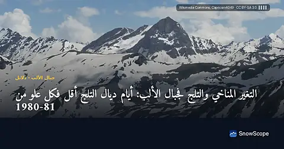
السلسلة ديالنا ديال 46 شتوة فالألب، 108 نقطة من 667 حتى ل 3872 م: أيام التلج نقصو فكلشي، وبوضوح ف 81 %. شنو تبدل وعلاش.

فالعلو ديال Oukaïmeden، السلسلة ديالنا ديال 46 شتوة كتبين 12 % أيام ديال التلج أقل؛ تحت، الإشارة كتضيع فالفرق الكبير بين الشتوات.

Baqueira-Beret كاينة ف Val d'Aran، فالجهة الأطلسية ديال البرانس. شنو كيعني هادشي للتلج ديالها، مجرب ب 46 شتوة اللي فاتو مقارنة مع La Molina، وإمتى تمشي.

بورتريه ديال Bonneval-sur-Arc ف Haute-Maurienne: سقوف ديال الحجر، كول مسدود، دومين صغير وتلج غليظ كيفاجئ، من 46 شتوة اللي فاتت فالتاريخ ديال التلج ديالنا.
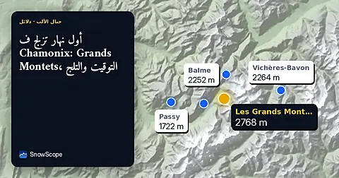
كيفاش تدوز أول نهار تزلج ف Chamonix، من Grands Montets فوق Argentière حتى ل الوقت المناسب لكل بيست، مع 46 شتوة ديال المعطيات.
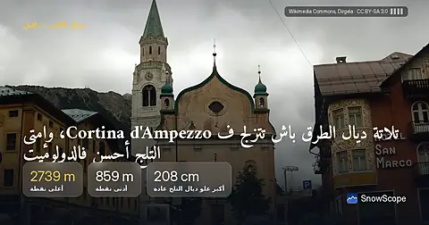
Cortina d'Ampezzo بتلاتة ديال الطرق: Tofana، Faloria-Cristallo و Cinque Torri-Lagazuoi، مع 46 شتوة ديال المعطيات فتلاتة ديال العلوات.
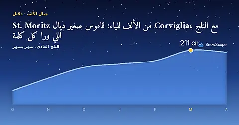
Chantarella، Marguns، Piz Nair، White Turf: الكلمات اللي كتسمع ف St. Moritz، مشروحين، وشنو كيقول التاريخ ديال التلج ديالنا ف 46 شتوة اللي فاتت على كل علو ف Corviglia.

Davos و Klosters كيتقاسمو ستة ديال الجبال ديال التزلج. برنامج نهار بنهار، كيبدا ب Parsenn، مع شنو كيقول التاريخ ديال التلج ديالنا ف 46 شتوة اللي فاتت على العلوات ديالو.

إمتى تحجز Courchevel و 3 Vallées، أشمن قرية تختار وفين كيبقى التلج، من 46 شتوة اللي فاتت.
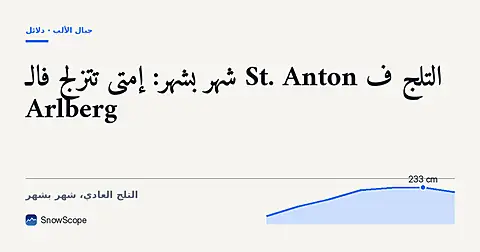
St. Anton و Ski Arlberg طول الشتا: العلو العادي ديال التلج فكل شهر فتلاتة ديال العلوات، من 46 شتوة اللي فاتت.
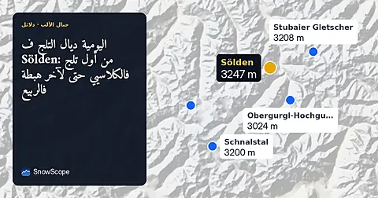
عام ديال التلج ف Sölden، مرحلة بمرحلة: إمتى كيبيضو الكلاسيي، الويكاند ديال كأس العالم، الوسط الطويل ديال الشتا والسيمانات ديال الربيع، من 46 شتوة اللي فاتو ف تلاتة ديال العلوات.

أيام التلج نقصو ف 120 نقطة اللي درسنا فالبرانس من 1980-81، وكثر تحت 1500 م: السلسلة ديالنا ديال 46 شتوة والبحث العلمي.

كناش عملي على Oukaïmeden فالأطلس الكبير: إمتى كيجي التلج غالبا، شحال، أشمن جهات تختار وكيفاش توصل من مراكش.

كيفاش تدوز نهار مزيان ف Luz-Ardiden، دومين صغير فوق Luz-Saint-Sauveur فالبرانس العليا: الطريق، الجوج جهات، التلج ديال 46 شتوة اللي فاتو، وأشمن سيمانات تختار.
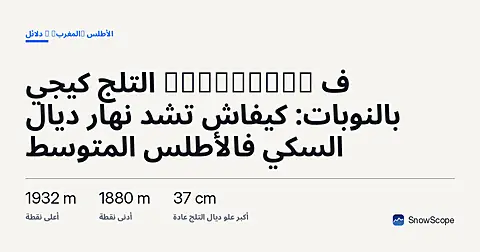
Michlifen، حدا إفران، التلج فيها كيجي نوبات قصار ماشي موسم كامل. شنو كيبينو 46 شتوة اللي فاتو، علاش العلو العادي صفر، وكيفاش تكون تما فالنهارات المزيانين.
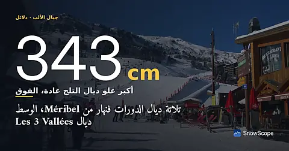
تلاتة ديال الطرق باش تدوز نهار من Méribel: للشرق نحو Courchevel، للجنوب نحو Val Thorens، ولا فالدار فوق Mont Vallon، مع التلج ديال 46 شتوة اللي فاتت فتلاتة ديال العلوات.